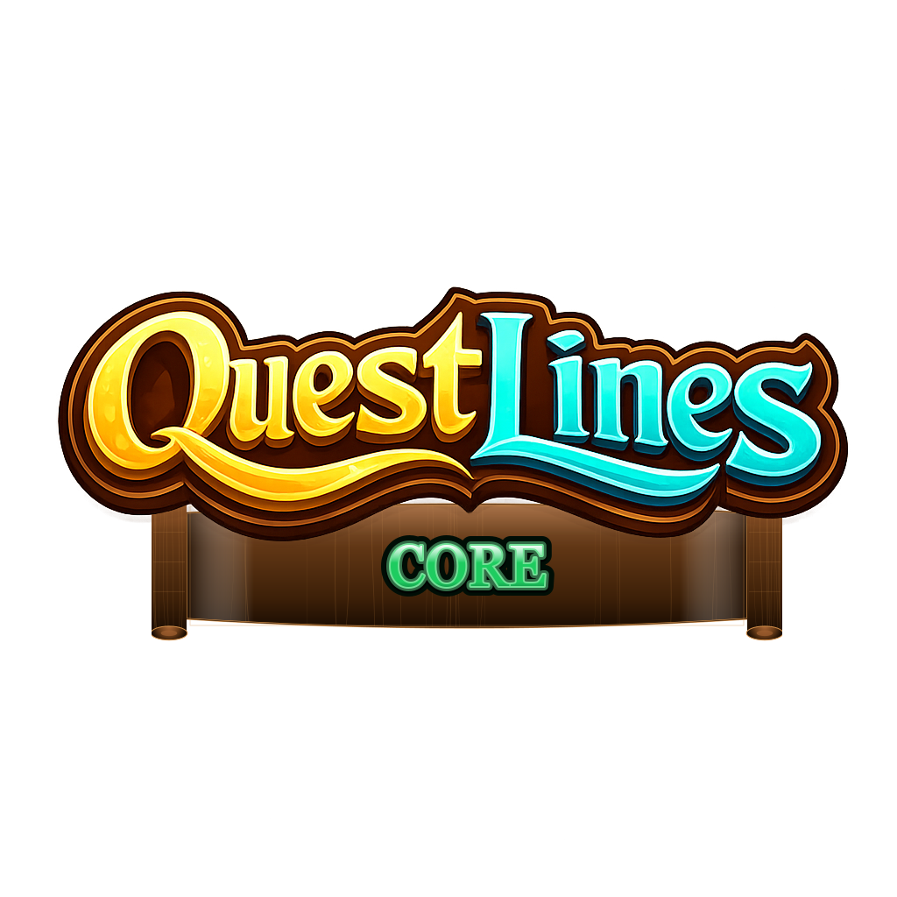
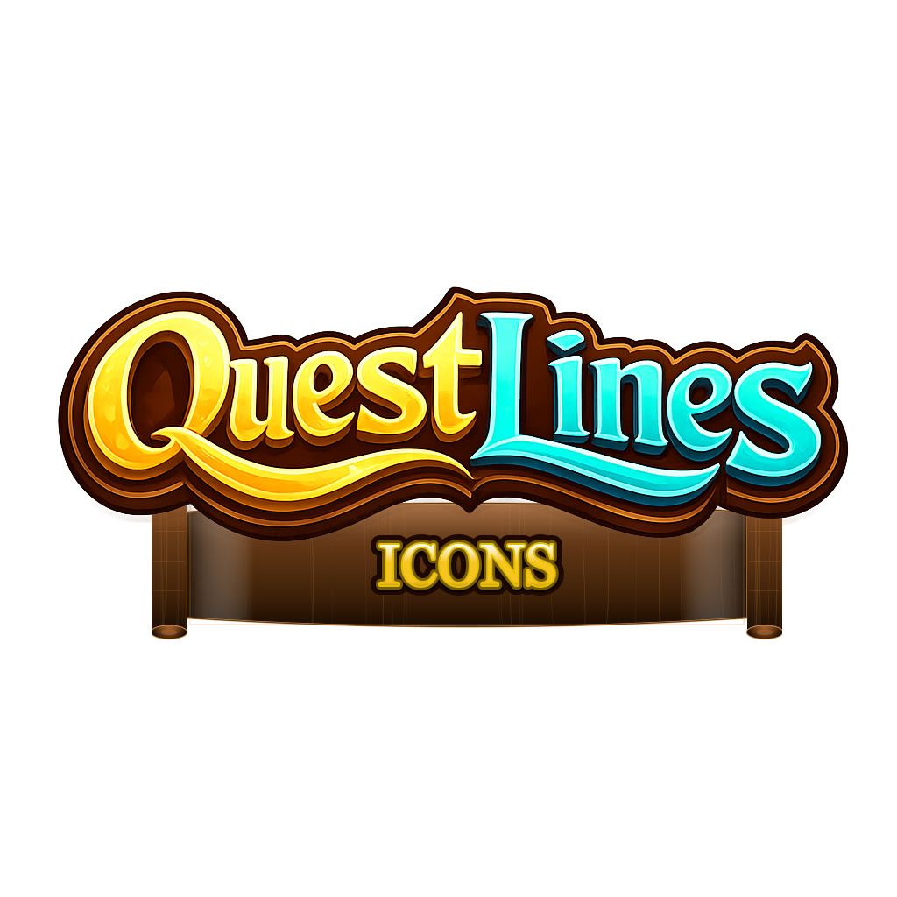
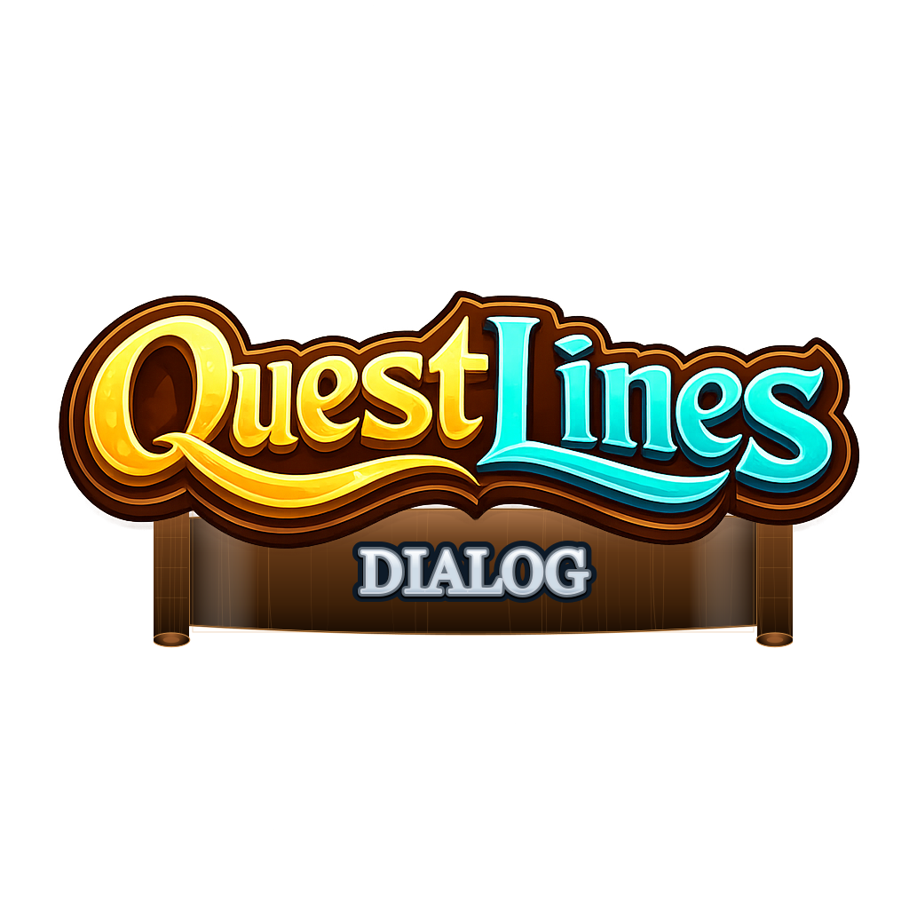
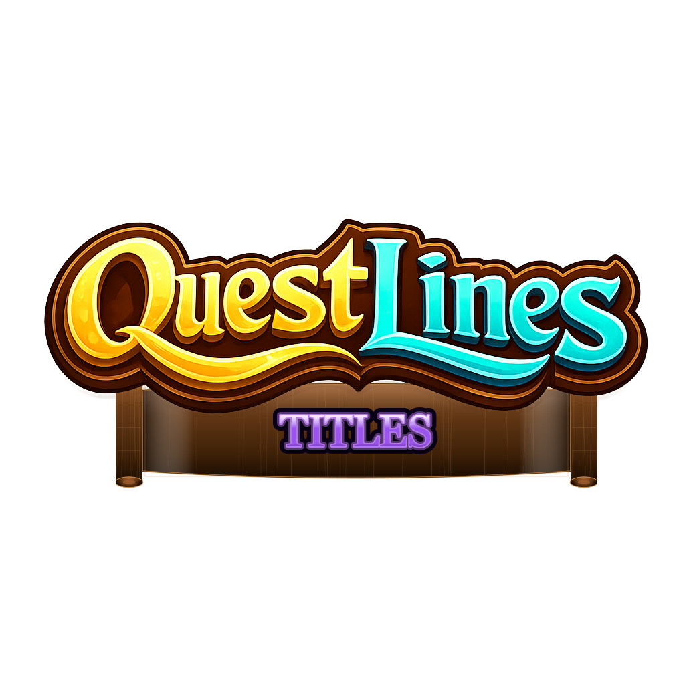
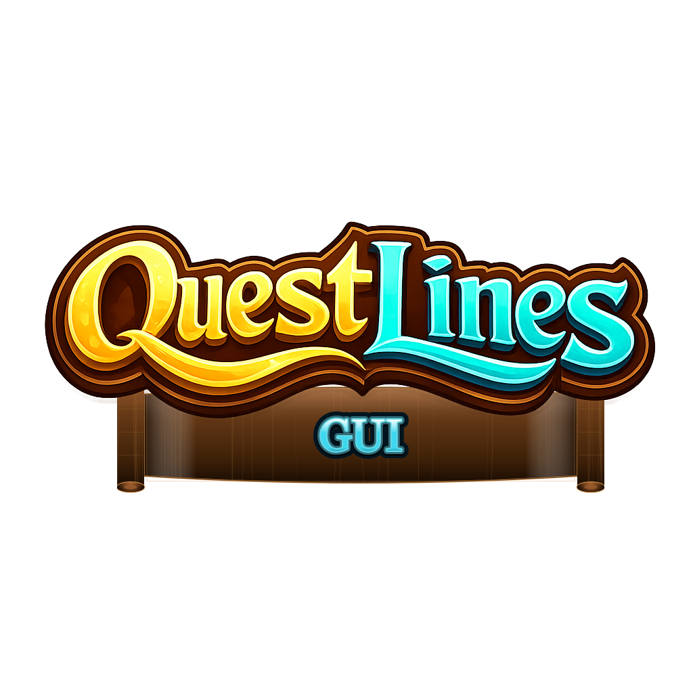
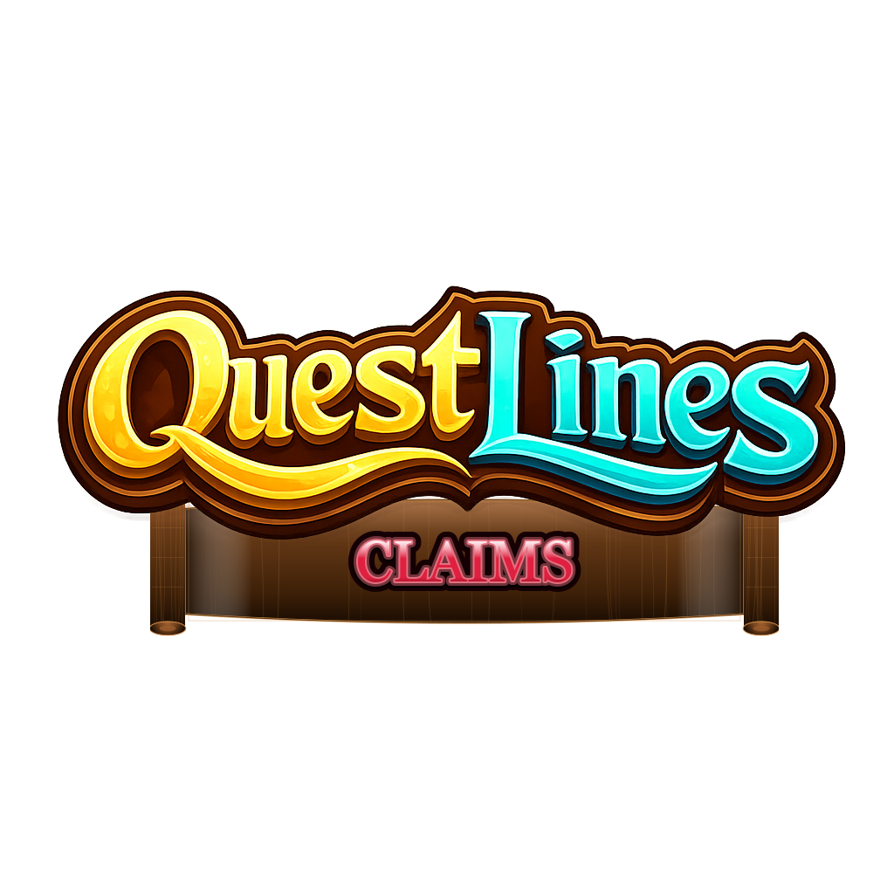
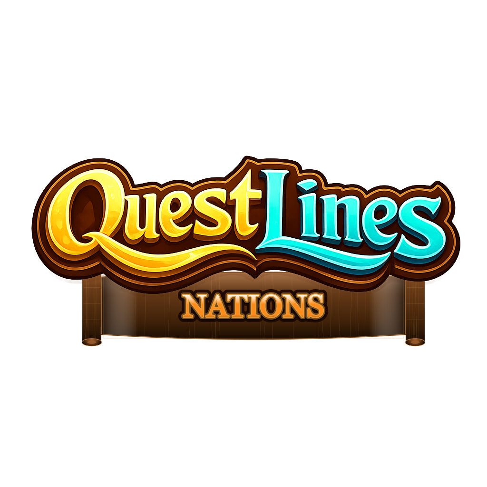
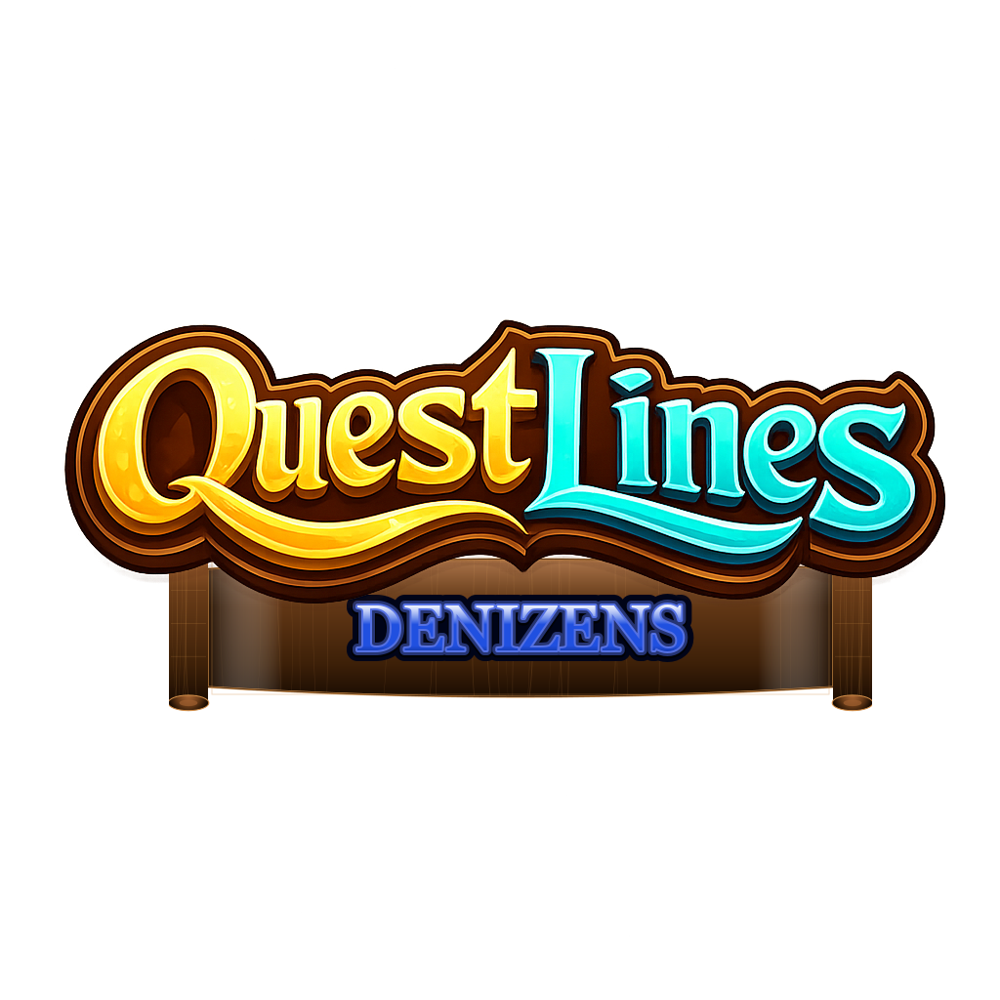

Read the Core overview to understand quests, pages, and how requirements decide which dialogue a player sees.
Point the wand, punch the NPC, and you're done. Works for HyCitizens and standard Hytale entities.
Every requirement, action, tracking flag, text variable, and formatting tag on one page.

The foundation. NPC dialogue with branching responses, quest state tracking, requirements, actions, a player journal, and an in-game editor — all in one plugin.

Per-player floating quest-state icons above NPCs. Shows at a glance whether an NPC has a quest available, one in progress, completed, or on cooldown.

A lightweight in-game dialog builder for linear NPC conversations. Build and export multi-page dialogs directly to QuestLines without writing any JSON.

A player title system. Grant richly formatted titles as quest rewards, let players choose their active title, and display it as a chat prefix or PlaceholderAPI placeholder.

Define custom in-game screens as .gui.html files. Buttons run any
Core action, elements can be requirement-gated, and text fields support Core
variables. Open any screen with the opengui: action.

Chunk-based land protection with per-region permission flags, admin regions, rent & buy regions with schematic restore, and a VaultUnlocked-backed economy for player purchases.

City-and-nation governance built on top of Claims. Players form invite-only cities; cities federate into nations. Each tier has its own claim pool, treasury, ranks, and diplomacy.

A native Hytale NPC manager (/denizen). Spawn, skin, equip, and
drive NPCs — patrols, look-at, attitudes, respawn — on native APIs.
A clean-room replacement for HyCitizens that syncs quest-givers into Core.
How the Plugins Fit Together
Core is required. Icons, Dialog, GUI, and Titles are optional companions. They load without Core but do little on their own (except Titles and Claims, which work standalone).
Handles all quest data, player state, NPC dialogue, and the in-game editor. Required by Icons and Dialog.
Reads QuestLines’ NPC assignments from npcs.json and renders per-player floating icons on top of NPCs based on quest state.
A simplified UI for creating linear (non-branching) dialogues. Exports flow into Core’s quest directory automatically.
Standalone player-title system. With Core installed: giveTitle:/removeTitle: actions, hasTitle: requirement, {title} variable.
Defines custom in-game screens as .gui.html files. Registers an opengui:guiId action usable from any response, load action, or button.
Standalone land protection. Wand-defined regions, chunk claiming, buy/rent regions with schematic restore, VaultUnlocked payments.
Claims addon. Adds CITY and NATION claim owner types on top of Claims and ships /city + /nation trees for membership, ranks, diplomacy, treasury, and tax.
Standalone native NPC manager. Runs without Core; with Core installed it syncs quest-giver / quest-board NPCs into Core’s NpcConfig by entity UUID and registers NPC-control actions (setAttitudeP:, swapRole:, lookAt:, …).
New to QuestLines? Start with Core Overview to understand quests, pages, and the page resolution algorithm. Then set up your first NPC via NPC Setup. Add Icons and Dialog once Core is running.
The QuestLines Knowledge bot brings this whole wiki into Discord — look up actions and requirements, search the docs, get AI-grounded answers, and generate or debug quest JSON without leaving chat. Run your own community? See Admin & Setup to add the bot to your server and configure it.
JAR Files
Each plugin ships as a separate JAR placed in the server’s mods/ directory:
| Plugin | JAR file | Data directory |
|---|---|---|
| QuestLines (Core) | questlines-core-{version}.jar |
mods/QuestLines/ |
| QuestLines Icons | questlines-icons-{version}.jar |
mods/QuestLinesIcons/ |
| QuestLines Dialog | questlines-dialog-{version}.jar |
mods/QuestLinesDialog/ |
| QuestLines Titles | questlines-titles-{version}.jar |
mods/QuestLinesTitles/ |
| QuestLines GUI | questlines-gui-{version}.jar |
mods/QuestLinesGUI/ |
| QuestLines Claims | questlines-claims-{version}.jar |
mods/QuestLinesClaims/ |
| QuestLines Nations | questlines-nations-{version}.jar |
mods/QuestLinesNations/ |
| QuestLines Denizens | questlines-denizens-{version}.jar |
mods/QuestLinesDenizens/ |
If you previously used the Icons plugin when its data directory was
mods/Icons/, it will automatically migrate icons.json
to the new mods/QuestLinesIcons/ location on first start.